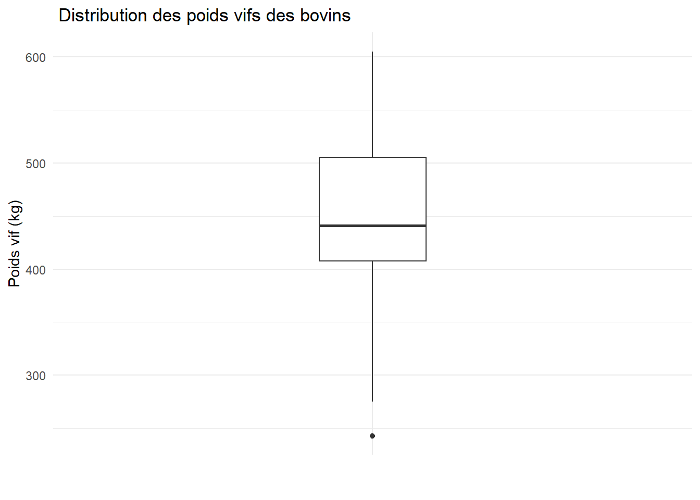
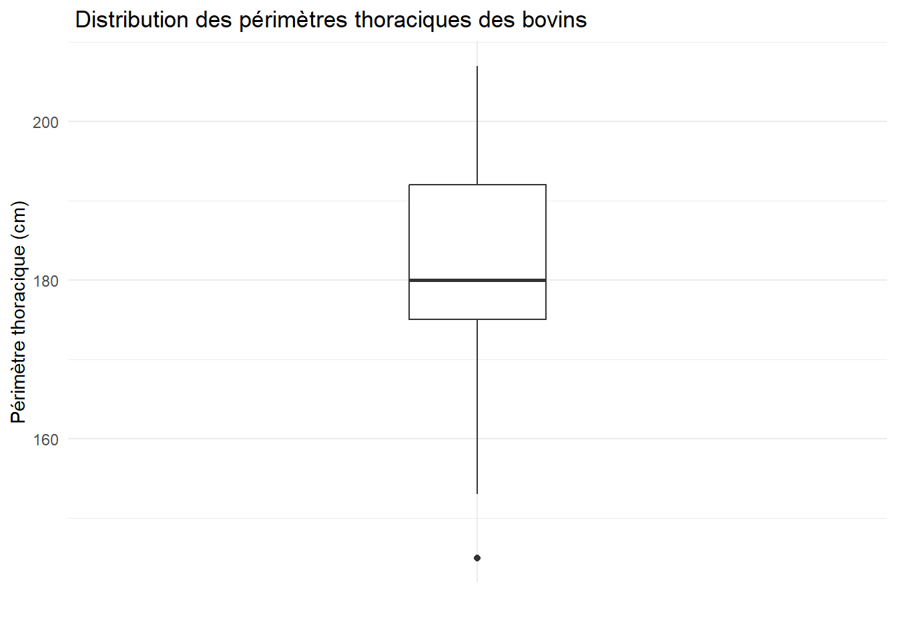
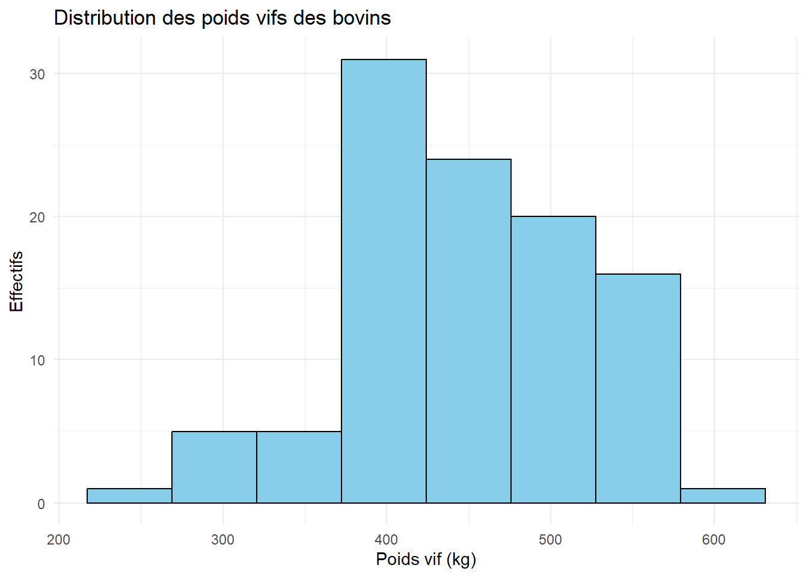
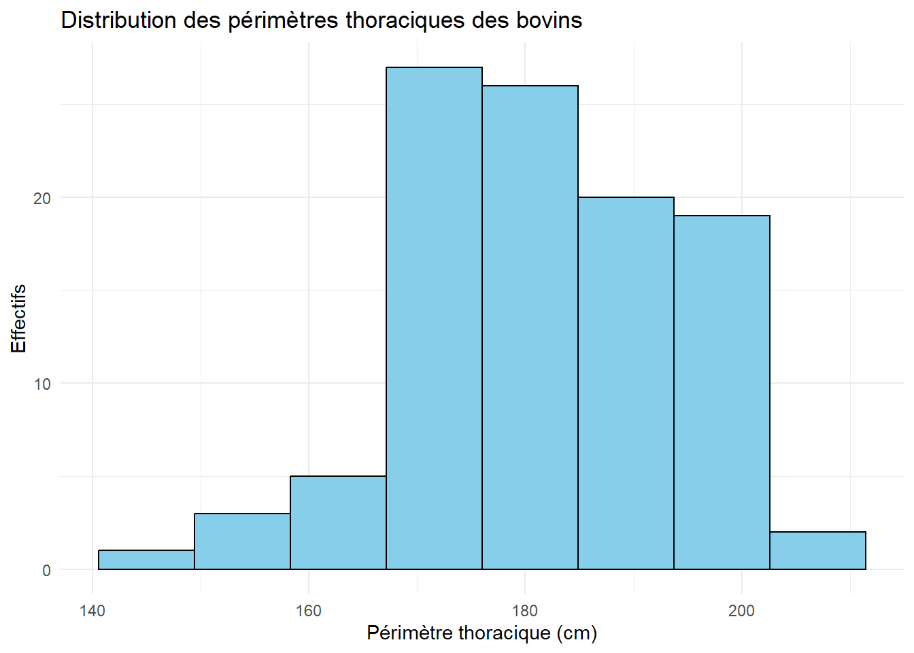
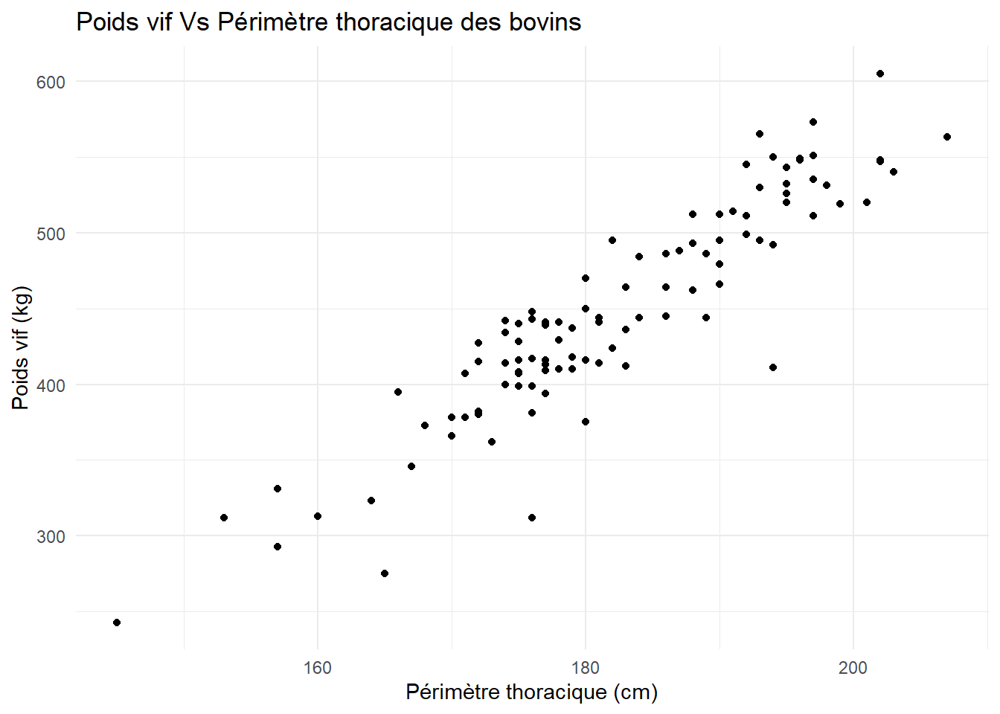
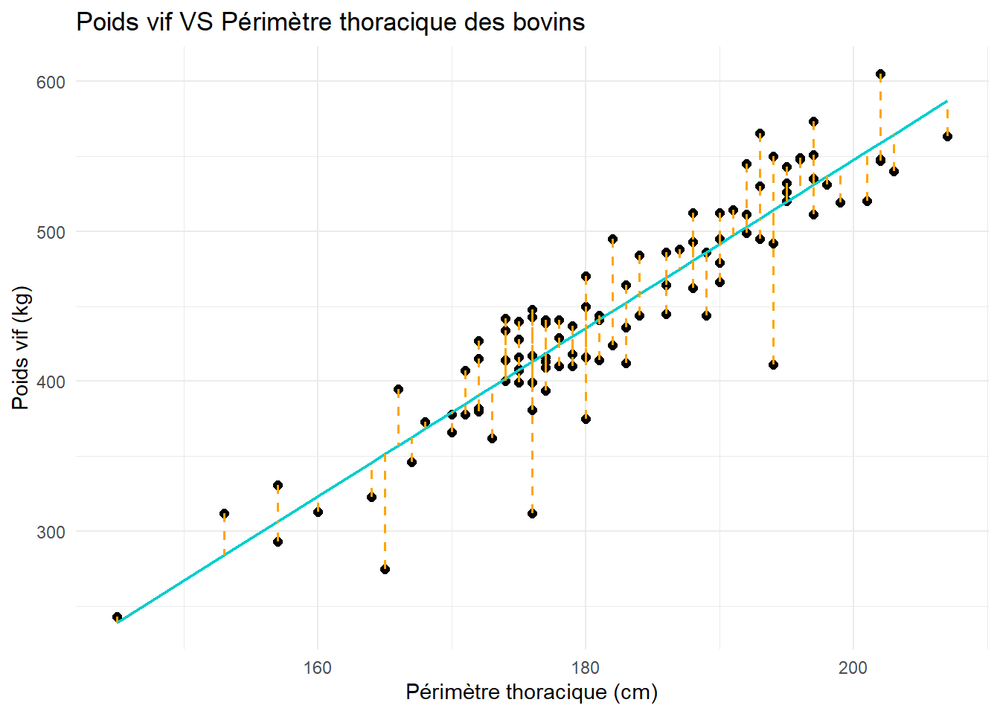
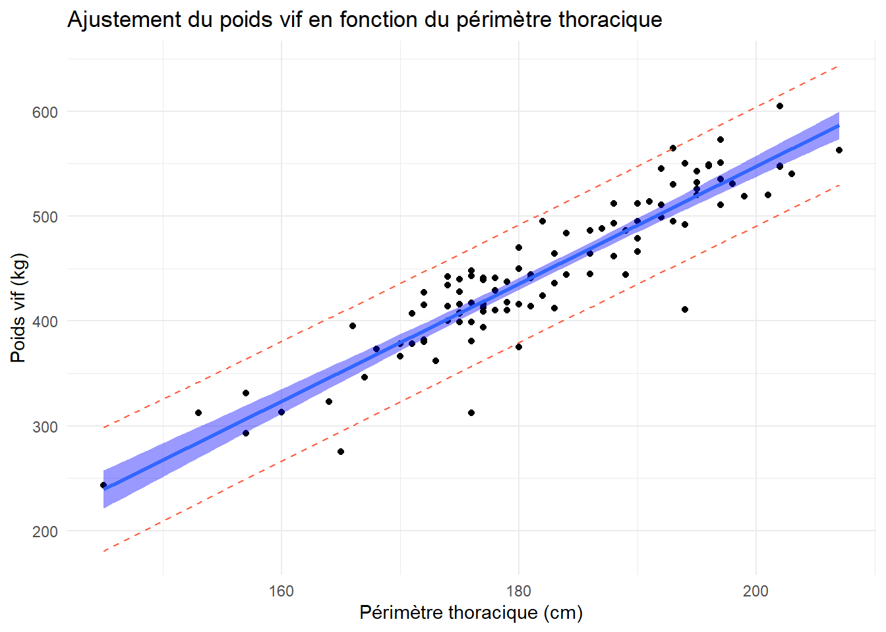

On considère le jeu de données cows.Rdata disponible ici , associé aux travaux de Ruchay et al. (2020).
Le jeu de données contient les observations de \(n=103\) bovins de race Hereford. Chaque ligne correspond à un animal. Le poids est exprimé en kilogrammes et les neuf mensurations corporelles en centimètres.
N correspond au numéro d’identification de l’animal.
Live_Weight correspond au poids vif de l’animal, en kg, c’est-à-dire au poids de l’animal vivant.
Withers_Height correspond à la hauteur au garrot, en cm.
Hip_Height correspond à la hauteur aux hanches, en cm.
Chest_Depth correspond à la profondeur de la poitrine, en cm.
Chest_Width correspond à la largeur de la poitrine, en cm.
Ilium_Width correspond à la largeur aux hanches, en cm.
Hip_Joint_Width correspond à la largeur entre les articulations des hanches, en cm.
Oblique_Body_Length correspond à la longueur oblique du corps, en cm.
Hip_Length correspond à la longueur du bassin, en cm.
Heart_Girth correspond au périmètre thoracique, en cm.
Avant de traiter les questions du TD, on importera le package tidyverse. Ce dernier est en fait une collection de packages contenant en particulier dplyr, utile pour manipuler les données, et ggplot2, utile pour réaliser de beaux graphiques.
library(tidyverse)
── Attaching core tidyverse packages ──────────────────────── tidyverse 2.0.0 ──
✔ dplyr 1.2.1 ✔ readr 2.2.0
✔ forcats 1.0.1 ✔ stringr 1.6.0
✔ ggplot2 4.0.3 ✔ tibble 3.3.1
✔ lubridate 1.9.5 ✔ tidyr 1.3.2
✔ purrr 1.2.2
── Conflicts ────────────────────────────────────────── tidyverse_conflicts() ──
✖ dplyr::filter() masks stats::filter()
✖ dplyr::lag() masks stats::lag()
ℹ Use the conflicted package (<http://conflicted.r-lib.org/>) to force all conflicts to become errors
Importer les données dans R, et en dresser un rapide résumé statistique.
Voir la réponse
load(file ="cows.Rdata")summary(cows)
N Live_Weight Withers_Height Hip_Height Chest_Depth
Min. : 1.0 Min. :243.0 Min. :100.0 Min. :100 Min. :50.00
1st Qu.: 26.5 1st Qu.:407.5 1st Qu.:118.0 1st Qu.:121 1st Qu.:61.00
Median : 52.0 Median :441.0 Median :120.0 Median :125 Median :62.00
Mean : 52.0 Mean :446.8 Mean :119.5 Mean :124 Mean :62.87
3rd Qu.: 77.5 3rd Qu.:505.0 3rd Qu.:122.0 3rd Qu.:128 3rd Qu.:65.00
Max. :103.0 Max. :605.0 Max. :132.0 Max. :137 Max. :70.00
Chest_Width Ilium_Width Hip_Joint_Width Oblique_Body_Length
Min. :29.00 Min. :35.0 Min. :35.00 Min. :124.0
1st Qu.:41.00 1st Qu.:42.0 1st Qu.:43.50 1st Qu.:143.0
Median :43.00 Median :44.0 Median :47.00 Median :149.0
Mean :43.51 Mean :43.4 Mean :46.95 Mean :151.6
3rd Qu.:46.00 3rd Qu.:45.0 3rd Qu.:51.00 3rd Qu.:155.0
Max. :61.00 Max. :51.0 Max. :56.00 Max. :452.0
Hip_Length Heart_Girth
Min. :35.00 Min. :145
1st Qu.:43.00 1st Qu.:175
Median :45.00 Median :180
Mean :44.87 Mean :182
3rd Qu.:46.50 3rd Qu.:192
Max. :58.00 Max. :207
On s’intéresse en particulier aux variables Live_Weight et Heart_Girth. On cherche notamment à expliquer le poids vif d’un animal en fonction de son périmètre thoracique.
Dresser un boxplot et un histogramme de chacune de ces variables. On pourra choisir le nombre\(k\) de classes de l’histogramme avec la formule de Sturges\[k = 1 +3.3\log_{10}(n).\]
Voir la réponse
# Boxplotsggplot(cows) +aes(x="",y=Live_Weight)+geom_boxplot(width =0.2)+theme_minimal()+labs(x="",y="Poids vif (kg)",title =" Distribution des poids vifs des bovins")

ggplot(cows) +aes(x="",y=Heart_Girth)+geom_boxplot(width =0.2)+theme_minimal()+labs(x="",y="Périmètre thoracique (cm)",title =" Distribution des périmètres thoraciques des bovins")

# Nombre de classes pour l'histogrammek <-ceiling(1+3.3*log10(nrow(cows)))ggplot(cows) +aes(x=Live_Weight)+geom_histogram(bins = k,fill="skyblue",colour ="black")+theme_minimal()+labs(x="Poids vif (kg)",y="Effectifs",title ="Distribution des poids vifs des bovins")

ggplot(cows) +aes(x=Heart_Girth)+geom_histogram(bins = k,fill="skyblue",colour ="black")+theme_minimal()+labs(x="Périmètre thoracique (cm)",y="Effectifs",title ="Distribution des périmètres thoraciques des bovins")

Représenter les différents individus (bovins) de l’étude par un nuage de points où on représentera
en abscisse, le périmètre thoracique ;
en ordonnée, le poids vif.
Voir la réponse
ggplot(cows) +aes(x=Heart_Girth,y=Live_Weight)+geom_point()+theme_minimal()+labs(x="Périmètre thoracique (cm)",y="Poids vif (kg)",title ="Poids vif Vs Périmètre thoracique des bovins")

Les deux variables semblent-elles linéairement corrélées ? Calculer leur coefficient de corrélation, et déterminer si celui-ci est significativement non nul.
Voir la réponse
Sur le graphique précédent, les deux variables semblent clairement positivement corrélées linéairement.
cor.test(x=cows$Live_Weight,y=cows$Heart_Girth)
Pearson's product-moment correlation
data: cows$Live_Weight and cows$Heart_Girth
t = 23.685, df = 101, p-value < 2.2e-16
alternative hypothesis: true correlation is not equal to 0
95 percent confidence interval:
0.8846335 0.9456211
sample estimates:
cor
0.9205598
Le coefficient de corrélation entre les deux variables est \(\rho \approx 0.92\), et celui-ci est significativement non nul au niveau de confiance 95%, avec une p-value inférieure à \(2,2\times 10^{-16}\).
Si \(Y\) désigne le poids vif de l’animal, et \(X\) son périmètre thoracique, on cherche à expliquer la variable \(Y\) en fonction de \(X\) par un modèle linéaire simple\[Y = \beta_0 + \beta_1 X + \varepsilon,\] où \(\varepsilon\) désigne une erreur non expliquée. On suppose donc dans la suite que pour chaque individu \(i\), on a \[y_i = \beta_0 + \beta_1 x_i + \varepsilon_i,\] où \(y_i\) désigne l’observation de la variable réponse (poids vif) pour l’individu \(i\), \(x_i\) sa variable explicative (périmètre thoracique), et \(\varepsilon_i\) l’erreur associée à cet individu. On supposera également que
les \(\varepsilon_i\) sont indépendants et identiquement distribués (i.i.d.) ;
les \(\varepsilon_i\) suivent tous une loi normale \(\mathcal{N}(0,\sigma^2)\).
L’objectif de la régression linéaire est d’estimer les paramètres \(\beta_0\), \(\beta_1\) et \(\sigma\).
Une valeur \(\beta_1>0\) siginifie que, d’après le modèle, plus une valeur \(X\) est grande, plus elle le sera pour \(Y\). Une valeur \(\beta_1<0\) a une interprétation contraire. La valeur \(\sigma\) indique la variabilité de ce qui n’est pas expliqué par le modèle. Plus il est grand, plus l’incertitude du modèle est grande.
On va estimer \(\beta_0\) et \(\beta_1\) par les moindres carrés ordinaires\[\left(\widehat{\beta}_0, \widehat{\beta}_1 \right) = \underset{(\beta_0,\beta_1)\in \mathbb{R}^2}{\mathrm{argmin}} \ \sum_{i=1}^n (y_i-\beta_0-\beta_1 x_i)^2 .\]
Il s’agit en fait de trouver la droite qui minimise les carrés des écarts entre les observations et celle-ci. On peut montrer que \(\widehat{\beta}_0\) et \(\widehat{\beta}_1\) sont non biaisés.

A l’aide de la fonction lm(), ajuster le modèle linéaire simple aux données. On sauvegardera les résultats dans un objet mod_lm.
Effectuer un résumé de cet ajustement. Quels sont les valeurs estimées \(\widehat{\beta}_0\), \(\widehat{\beta}_1\) et \(\widehat{\sigma}\) ?
Voir la réponse
summary(mod_lm)
Call:
lm(formula = Live_Weight ~ Heart_Girth, data = cows)
Residuals:
Min 1Q Median 3Q Max
-102.963 -14.225 0.048 20.463 56.639
Coefficients:
Estimate Std. Error t value Pr(>|t|)
(Intercept) -572.8743 43.1421 -13.28 <2e-16 ***
Heart_Girth 5.6023 0.2365 23.68 <2e-16 ***
---
Signif. codes: 0 '***' 0.001 '**' 0.01 '*' 0.05 '.' 0.1 ' ' 1
Residual standard error: 28.15 on 101 degrees of freedom
Multiple R-squared: 0.8474, Adjusted R-squared: 0.8459
F-statistic: 561 on 1 and 101 DF, p-value: < 2.2e-16
On a ici \(\widehat{\beta}_0 \approx -572,87\), \(\widehat{\beta}_1 \approx 5,60\) et \(\widehat{\sigma} \approx 28,15\).
Un estimateur sans biais de \(\sigma^2\) est donné par \[\widehat{\sigma}^2 = \dfrac{1}{n-2} \sum_{i=1}^n (\widehat{y}_i-y_i)^2,\] où \(\widehat{y}_i = \widehat{\beta}_0 + \widehat{\beta}_1 x_i\) est la valeur de la variable réponse ajustée par le modèle pour l’observation \(i\).
Afin d’évaluer la qualité de l’ajustement de la droite d’équation \(y= \widehat{\beta}_0 + \widehat{\beta}_1 x\) aux données, on peut calculer la proportion de variance des observations expliquée par notre modèle. On a en effet
\(SCT\) désigne a somme des carrés totale, \(SCE\) la somme des carrés expliquée, et \(SCR\) la somme des carrés résiduelle. Pour chaque individu \(i\), on note effectivement \(\widehat{\varepsilon}_i = \widehat{y}_i - y_i\) le résidu de l’observation \(i\). Il s’agit de l’erreur commise par le modèle pour cette observation.
Le coefficient de détermination\(R^2\) du modèle est défini par \[R^2 = \frac{SCE}{SCT} = 1 - \frac{SCR}{SCT} = \frac{\text{Dispersion expliquée}}{\text{Dispersion totale}}. \] Ce nombre réel, compris entre 0 et 1, représente la proportion de variance de la variable réponse expliquée par le modèle. Plus il est proche de 1, plus le modèle semble adapté aux données.
Déterminer le coefficient \(R^2\) du modèle ainsi ajusté. Quelle est la proportion de variance expliquée par le modèle ?
Voir la réponse
D’après le résumé de mod_lm, on a ici \(R^2 \approx 0,85\), la proportion de variance epliquée par le modèle est d’environ 85%.
On peut montrer que \[ t_i = \dfrac{\widehat{\beta}_i - \beta_i}{\widehat{\sigma}_i} \sim \mathcal{T}_{n-2} \] où \(\widehat{\sigma}_i\) est un estimateur de \(Var(\beta_i)\) non explicité ici, et \(\mathcal{T}_{n-2}\) désigne la loi de Student à \(n-2\) degrés de liberté.
Cette propriété permet notamment de réaliser un test d’hypothèse \[ H_0 : \beta_i = 0 \quad \text{contre} \quad \beta_i \neq 0, \] ainsi que de déterminer un intervalle de confiance de niveau 95% pour chaque \(\beta_i\)\[ IC(\beta_i) = \left[ \widehat{\beta}_i - q \times \widehat{\sigma}_i, \widehat{\beta}_i + q\times \widehat{\sigma}_i \right] \] où \(q\) désigne le quantile d’ordre 0,975 de la loi \(\mathcal{T}_{n-2}\).
Les valeurs de \(\beta_0\) et \(\beta_1\) sont-elles siginficativement non nulles ? Déterminer un intervalle de confiance au niveau 95% pour ces valeurs.
Voir la réponse
Ces deux valeurs sont significativement non nuls d’après le résumé de mod_lm. Pour obenir les intervalles de confiance :
Pour une nouvelle observation indépendante de la variable explicative \(x_{n+1}\), on peut déterminer une estimation de la variable réponse \(y_{n+1}\) par \[ \widehat{y}_{n+1} = \widehat{\beta}_0 + \widehat{\beta}_1 x_{n+1}.\]
On peut montrer que \[ \dfrac{y_{n+1}-\widehat{y}_{n+1}}{\sqrt{\widehat{\sigma}^2\left( 1 + \frac{1}{n} + \frac{(x_{n+1}-\overline{x})^2}{\sum_{i=1}^n (x_i-\overline{x})^2} \right)}} \sim \mathcal{T}_{n-2}.\]
On en déduit alors un intervalle de confiance au niveau 95% pour \(y_{n+1}\)\[ IC(y_{n+1}) = \left[ \widehat{y}_{n+1} \pm q\times \sqrt{\widehat{\sigma}^2\left( 1 + \frac{1}{n} + \frac{(x_{n+1}-\overline{x})^2}{\sum_{i=1}^n (x_i-\overline{x})^2} \right)} \right].\]
On considère alors 5 nouveaux bovins, dont les périmètres thoraciques, en cm, sont 151, 170,165,193 et 177.
Créer d’abord un dataframe new_cowscontenant une seule colonne nommée Heart_Girth, représentant ces 5 nouveaux bovins. A l’aide de la fonction predict(), donner ensuite une estimation du poids vif de ces bovins, ainsi qu’un intervalle de confiance à 95%.
Dans le dataframe cows, rajouter deux colonnes donnant les bornes inférieure et supérieure des intervalles de confiance à 95% pour les prédictions faites par le modèle pour chaque observation initiale.
A l’aide de la commande geom_smooth(), représenter la droite des moindres carrés ajustée à notre jeu de données. Ajouter également les droites représentant l’intervalle de prédiction calculé précédemment. Pouvez-vous expliquer la différence entre les deux intervalles représentés ?
Voir la réponse
ggplot(cows) +aes(x = Heart_Girth,y=Live_Weight)+geom_point()+geom_smooth(method="lm",fill="blue")+geom_line(aes(y = Upper_Live_Weight),linetype="dashed",color="tomato")+geom_line(aes(y = Lower_Live_Weight),linetype ="dashed",color="tomato")+theme_minimal()+labs(x="Périmètre thoracique (cm)",y="Poids vif (kg)",title ="Ajustement du poids vif en fonction du périmètre thoracique")
`geom_smooth()` using formula = 'y ~ x'

L’intervalle de confiance calculé par geom_smooth() correspond à l’intervalle de confiance au niveau 95% pour la valeur moyenne d’une prédiction, tandis que l’intervalle de confiance calculé à la question précédente donne l’intervalle de confiance pour une nouvelle observation indépendante.
Références
Ruchay, Alexey, Vitaly Kober, Konstantin Dorofeev, Vladimir Kolpakov, et Sergei Miroshnikov. 2020. « Accurate body measurement of live cattle using three depth cameras and non-rigid 3-D shape recovery ». Computers and Electronics in Agriculture 179: 105821. https://doi.org/10.1016/j.compag.2020.105821.